Sueños de rock and roll, dice alguna canción por ahí, en nuestro caso el sueño estaba justificado, era por la mañana, coincidimos en algún lugar de nuestra casa y con las galletas en la boca y colacao en mano, alguien dijo; ¿hacemos un grupo?, el resto fue decir, no hay huevos, y aquí estamos.
En parte pudo haber sido así, esto fue allá por el 2014, lo empezamos como una manera divertida de pasarlo bien en casa compartiendo una pasión común, la música y sobre todo el rock, nos pusimos a ello, y pasado el tiempo hemos ido haciendo de ese entretenimiento, un proyecto. Había que ponerle un nombre, y como no nos conocemos ( cuando tocamos , jejeje ) , pues "Los Desconocidos"
En nuestro repertorio, alternamos versiones de clásicos del rock en castellano, con temas de creación propia, pero calificanos cuando nos veas en directo.......
Anxo Jorge
Era de niño un prodigio, con los años ya no es niño, tampoco prodigio, a veces parece acompañar las letras de las canciones susurrando coros y danzas.
Hace sonar las guitarras, tanto de las de madera como de las de enchufar, le da igual si tienen cuerdas o cuantas tenga.
Miguel Jorge
El patriarca de la banda, de su garganta surge un sonido similar a la voz humana, combinado con la música pueden parecer incluso canticos, ya que se escuchan por momentos algo parecido a palabras con apariencia coherente, (o no tan coherente)
Se encarga de hacer sonar la guitarra de cuerdas gordas, también conocida como “bajo eléctrico”, en ocasiones puede golpear instrumentos diabólicos con teclas de los que surgen dulces melodías de sonidos variados
Brais Jorge
El polipatetico de la banda, golpea con fuerza los tambores y platillos, pero en ocasiones puede parecer poseer sensibilidad mientras toca una guitarra cual juglar medieval (con mallas y todo) o perseguido por millones de ratas siguiendo el sonido que hace salir de una flauta, (de palo o de lata)
Grita por momentos partes de las letras de la canciones.


40 de Abril - En el quinto coño
40 de Abril - En el quinto coño
40 de Abril - En el quinto coño
40 de Abril - En el quinto coño

Los Desconocidos - 2016 - Todos los Derechos reservados
 


